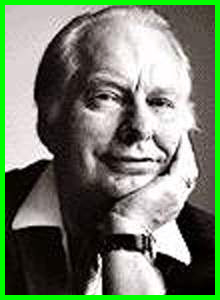

DOMINUS TEMPORIS
Viajeros del Tiempo
El Visor Temporal o Cronovisor
El Visor Temporal o Cronovisor: es un dispositivo que muestra a traves de una ventana fija, cualquier instante del pasado, y permite ver lo que ocurrio en ese instante como si lo estuvieramos viendo en este mismo momento en nuestro tiempo.
No existe una comunicacion fisica entre el momento actual y el pasado. Es Solamente una visualizacion de un hecho ocurrido en el pasado a traves de esta ventana temporal.
El 2 de mayo de 1972 el semanario italiano Domenica del Corriere sorprendia a sus lectores con un insolito titular: "Inventada la maquina que fotografia el pasado". Era la primera informacion publica sobre un tema que activaria la polemica y, entre contradicciones y acusaciones de fraude, acabaria erigiendose en un enigma que perdura hasta nuestros dias.
Los fundamentos de este descubrimiento se basan en el conocido principio de la fisica clasica, segun el cual "la energia no se crea ni se destruye, solo se transforma". El inventor del aparato, el Padre Alfredo Pellegrino Ernetti (1925-1994), un sacerdote benedictino, que con un equipo de doce fisicos encabezados por el que trabajaban en el Vaticano, aseguraba haber construido su maquina basandose en el concepto de que las ondas sonoras y visuales son energia y, por tanto, estan sometidas a las mismas leyes fisicas que la materia. Igual que desde las particulas mas infimas se puede recomponer un elemento en su forma primitiva, el artefacto seria capaz de acceder a las ondas luminosas y sonoras del pasado, reorganizandolas en las mismas imagenes y sonidos que las integraron en su origen.

El Padre Ernetti declaro que la Iglesia le puso una mordaza que no le permitia hablar.
Desprestigiar su trabajo resultaba facil para la jerarquia eclesiastica. Asi se garantizaba la burla de la opinion publica y se aseguraba el dominio omnipotente del Vaticano sobre el invento, Pero aun hay mas.

Esquema del Cronovisor
En 1965, el diario Il Giorno difundio que los servicios secretos del Vaticano, en colaboracion con los del contraespionaje italiano, detuvieron a un ingeniero llamado Antonio Beretta, bajo la sospecha de que trabajaba para el KGB. Lo cierto es que el arrestado era un experto en la teoria de la Relatividad y que durante 8 anios trabajo al servicio del Padre Ernetti. La unica informacion que pudo haber vendido a los sovieticos habria sido la relacionada con las actividades desarrolladas en el laboratorio de San Giorgio Maggiore.
Durante un congreso internacional, un funcionario del ministerio del Interior sovietico, Sergei Antonov, confio a un delegado occidental que "los propios trabajos de nuestros fisicos nos inducen a pensar que el equipo de San Giorgio ha debido realizar ya la grabacion en magnetofono de la explosion de Sodoma y Gomorra, asi como la inscripcion de las Tablas de la Ley en el Sinai".
Y en un articulo publicado por el diario ruso Pravda, se leia: "Las investigaciones sobre la reconstruccion del pasado efectuadas en Italia bajo el control del Vaticano y del ministerio del Interior estan mucho mas avanzadas de lo que se ha pretendido. Es un trabajo fuertemente vigilado por los servicios secretos del Vaticano".
El caso del Cronovisor se dio a conocer en el anio 1972 por el Padre Ernetti que concedio una entrevista al diario italiano “La Domenica del Corriere”, en la cual afirmo haber participado en el proceso de esta singular maquina del tiempo.
El rumor se extendiò por todo el mundo. Sin embargo anteriormente el Padre Ernetti ya habìa dado pequenios detalles en alguna publicaciones. En Julio de 1965 una revista religiosa de Francia “L`Heure d`Etre” y en Enero de 1966, la publicacion italiana “Civilta delle Macchine”, recogieron la noticia pero la poca importancia de esos dos medios hizo que la noticia no fuera tomada en cuenta hasta 1972.
El padre Ernetti nunca entro en detalles tecnicos de la maquina, pero si en los logros. Afirmo haber fotografiado las tablas de la ley, la destruccion de Sodoma y Gomorra, un discurso de Mussolini o la crucifixion de Cristo.
Pio XII tuvo el control de este proyecto desde el principio, aunque lo califico de secreto de estado. El proyecto fue cancelado y requisado por el Vaticano, pero no destruido, el Cronovisor se encontraria a buen recaudo.
Antes de morir el Padre Ernetti, envio una carta a Japon, pais con el que tenia buena relacion y contactos y otra carta a Suiza. En esas cartas pueden estar los planos del Cronovisor, ya que el prometio al Papa Pio XII que nunca haria publicos los detalles, a pesar de que varios anios despues seguia siendo entrevistado.
Pero si es un fraude, ¿por que la Iglesia y los servicios secretos italianos se involucraron en algo que no era mas que un delirio?.
Aun mas importante, ¿por que, en 1988, el Vaticano emitio un decreto segun el cual seran excomulgados todos aquellos que capten o divulguen "con cualquier instrumento tecnico acontecimientos pasados … "?
Tambien hay una entrevista referente a este tema en la que el entrevistado es Lafayette Ron Hubbard (1911-1986), fue un prolifico y controvertido escritor y militar estadounidense y el fundador de Dianetica y la Cienciologia, el si creyo en un visor temporal que permita visualizar el pasado.

Volver a la pagina principal